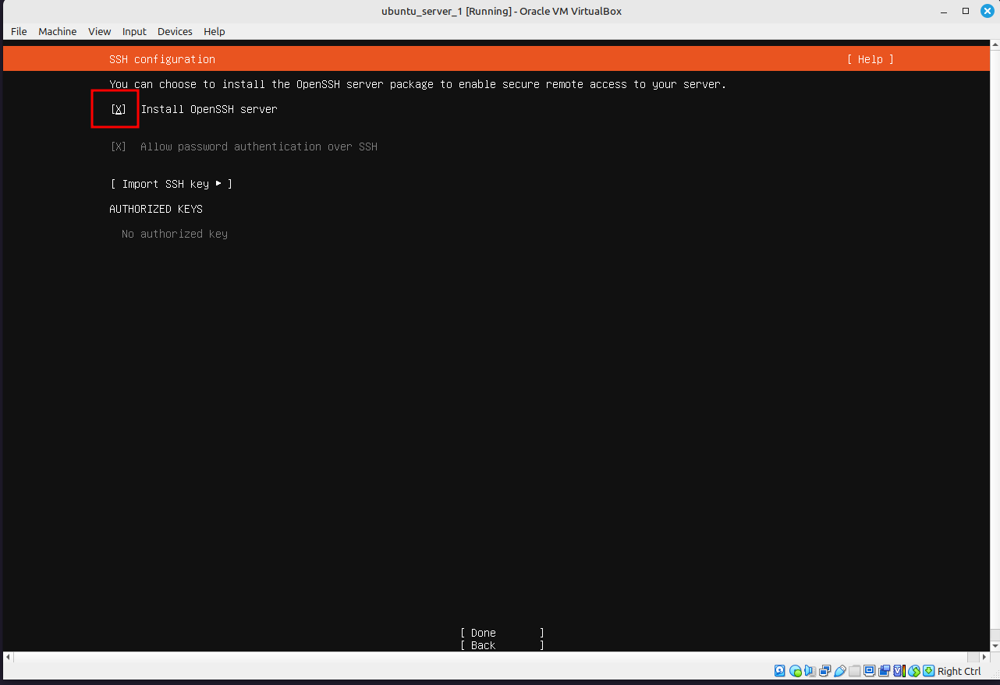

9 SSH
9.1 Įvadas
Šiame skyriuje tu išmoksi kelių labai svarbių dalykų. Pirma tu instlaiuosi Virtualbox ir guesteddions CD. Tai programa, kuri tau leis tavo kompiuteryje instlaituoti vieną ar kelis kitus kompiuterius. Tu galėtum teoriškai instlaiuoti net Windows as MacOs operacines sistemas, kurios būtų pilnavertiškai veikiančios iš tavo kompiuterio. Suprantama yra bet… Windows reikia licenzijos, ir tiek Windows tiek MacOs reikalauja gauna daug resursų.Tai reikia turėti omenyje. Ųiame skyriuje tu instaliuosi net 2 Ubuntu serverius ir vienu metus juos galėsi valdyti. Instaliavus ubuntu serverius tu suprantama galėsi matyti jų langus savo ekrane. Taip tu simuliuotum tarsi ekrano ir klaviatūros turėjimą serverinėje. Tačiau taip nevisada yra, dažniausiai reikia prie serverio prisijungti nuotoliniu būdų. Tam tu išmoksi naudotis labai svarbia programa - SSH (secure shell), kuri tau leis nepaliekant tavo kompiuterio terminal lango, sukurti ryši ir persikelti į serverį. Skyriaus pabaigoje, tu išmoksi naudotis ir TMUX, tai terminalo multiplexorius, kuris leidžia viename Terminalo lango turėti kelis terminalo langus. Tai tau padės efektyviau dirbti su visais serveriais. Papildomai tu išmoksi scp ir rsync komandas (programas), kurios leis tau siųsti duomenis tarp serverių.
Traigi šio skyriaus planas:
- instliuoti Vitualbox
- instliuoti 2 Ubuntu serverius
- išmokti naudotis SSH kad prisijungti prie serverių
- išmokti naudotis TMUX, kad darbas dirbant su serveriais būtų paprastensnis
- snaudotis cp ir rsync komandos persiunčiant failus tarp serverių
Ką tau reikia prisiminti iš praėjusių skyrių:
- kaip atnaujinti Debian sistemas (Ubuntu, Linux Mint) su
apt - kas yra ufw firewall ir kaip jis konfiguruojamas
- kaip su systemd (
systemctl) startuoti procesus
Čia kaip SSH į VirtualBox, tik iškart geriau kaip bridge adapter, nes tada VM naudojasi dhcp ir gauna nromalų lokalų adresą https://youtu.be/rhFLfwZzlGA
9.2 Virtual Box
Virtual Box yra programa, kuri leidžia tau sukurti konteinerius ir juose instaliuoti kitas operacines sistemas. Pradėkime nuo to, kad tau reikia instaliuoti Virtual Box. Kadangi VirtualBox lengviausia naudoti naudojantis GUI (graphical user interface), tai ir instaliaciją padaryk per software manager. Čia vienas variantų, kai GUI aplikacija yra geresnis pasirinkikimas nei kad terminalas. Nors esu tikras, jog teoriškai tai būtų irgi įmanoma. :D
Psileisk Software Manager per Menu. Ir visai gali būti, kad tau į akis iškart šoks VirtualBox, jeigu ne, į paiešką įrašyk Virutalbox
Pradėk nuo Virtualbox (base) ji instaliuojant tau automatiškai instaliuosi pirmi trys paketai, bet tada patarčiau iškart instaliuoti ir sekančius du.
- virtualbox-guest-additions-iso
- virtualbox-ext-pack
Dabar per Menu startuok Virtualbox ir tave turėtų pasitikti štai toks vaizdas:
Jeigu kažkur spustelėsi, gali būt kad į šį meniu nebegrįši, tad kai prireiks instlaiuoti virtualius kompiuterius, virtuiniame meniu rinkis “Machine” ir tada “New”.
9.3 Ubuntu serverio ISO
Prieš pradedant instaliuoti Ubuntu serverio operacinę sistemą, ją reikia parsisiųsti. Nueik į https://ubuntu.com/download/server ir pasirinki Download 24.04.01 LTS. Arba jeigu jau bis naujesnė LTS versiją, pasirink ją. Paspaudus ant Download, tau atsidarys naujas langas. Nieko įrašinėti tau nereikia, ISO failo parsisiuntimas prasidės po kelių sekundžių automatiškai.
Tačiau jeigu nori, gali iš atsidariusio lango parsisitų Ubuntu Cheatsheet - pagrindinių ubuntu temrinalo komandų rinkinį. Labai daug ką iš ten, jau būsi mačius.
ISO failas, tai taso virtualus CD. Jeigu norėtum dar ir dabar galėtum panaudti ISO failą, kad įrašyti / sukurti instlaicijos CD. Tačiau CD mums neprireiks, viską padarysi virtualiai.
Atsidarius Nemo ir nueėjus į Downloads turėtum matyti
9.4 Ubuntu instalivimas per Virtualbox
Virtualbox spausk ant Machine, tada ant New
Atsiduriasame lange įrašyk:
- ubuntu_server_1
- ISO image, spasuk ant dropdpown meniu, pasirink Other, dabar atsidarys Nemo failų naršyklė, nueik į Downloads ir ten pasirinkus ISO failą spausk ant
- uždėk varnelę ant Skip unattened installation
Spausk ant next. Dabar reikės sukurti nustatymus kiek resursų suteiki šiam virtualiam serveriui. Gali arba judinti slider’į arba tiesiog įrašyti skaičius:
- Base Memory 512
- Processos 1
Spausk ant next. Sekančiame lange tavęs klaus, kiek suteikti kietojo disko vietos. Kadangi tau praktikai reikia tik minimalios instaliacijos ir tu nedarysi su šiais serveriais nieko reikšmingo, pasirink 5GB. Kai pasirinksi, taov kompiuteris alokuos iki 5GB vietos, bet jeigu instaliacijai reikės tik 3GB, tai ir panaudosi tik 3. Nedėk varnelės ant Pre-allocate Full Size!
Spausk Next. Įsitikink kad visi paremtrai teisingi ir spausk Finish
Dabar tu dar nieko neinstliavai, tik sukūrei konteinėrį. Ir vaizdas turėjo pasiekst į daugmaž tokį. Spausk ant Settings (jeigu reikia, spustl ant ubuntu_server_1).
Nueik į Network ir Attached to: pakeisk iš NAT į Bridged Adapter. Tai leis virtual serveriui, gauti IP adresą iš tavo maršutizatoriaus ir tu galėsi pasiekti šį kompiuterį naudojantis IP adresu. Bet apie tai vėliau. Spausk ant OK.
Dabar tu pasiruošus rpadėt Ubuntu Serverio instaliavimą šiame konteineryje. Spausk ant Start.

Pranįimų panelę gali išjungti. Tada gali spausti Enter, arba jeigu nespėsi, po keliolikos sekundžių pasileis pirmas pasirinkimas - instlaiuoti Ubuntu Serverį (Try or Install Ubuntu Server)
NOTE: Jeigu pastrigo vaizdas ir niekas nejuda pirmyn, išjunk per X langą. Pasirink Power off the machine., tada nueik ir tik instaliacijos metu suteik daugiau resursų, pvz 2 procesrius ir 1024 RAM. Tai gali padaryti Settings nuėjus į System. Padidinti base memory iki 2024 ir processor skiltyje iki 2.
Jeigu viskas gerai, dabar turėtum matyt tokį vaizdą, kur tavęs klaus, kokia kalba instlaiuoti Ubuntu serverį. Intsialicijos langą tu valdau su roduklytėmis ir enter klavišu. Pasirinkus English, spausk Enter.

Jeigu gausi pranešimą, kad yra prieinamas instaliatoriaus anaujinimas, pasirink atnaujinkti ir spausk Enter
Sekančiame lange tavęs klaus, kokia tavo klaviatūra, pasilik prie English US. Kaip matai, apačioje ž-aliuoja Done, jeigu spausi enter, iš esmės nuspausi ta Done “mygtuką”.
Sekančiame lange su rodyklytėm pakilk ant Ubuntu Server (minimized) ir su SPACE klavišu atvirtink pasirinkimą. X turėtų pažymėti, pasirinktą variantą. tada su roiklyte nueik ant Done ir spausk Enter
Sekančiame lange tau nereikia nieko daryti. Gali spausti enter. Bet kartu, šiame lange jau matysi IP adresą, kuriuos tavo serveris bus pasiekiamas. Jeigu viskas gerai ir tu matai skaičius tokius kaip 192.168.1…. viskas ok ir spausk Enter
Sekančiame lange tavęs klausia, ar tu naudoji Proxy. Tu nieko nenaudoji, tad spausk Enter.
Sekančiame lange, Ubuntu instliatoris pabandys susisiekti ri rasti greičiausia veidroinį serverį. Palauk kelias akimirkas ir kai pamatysi pranešimą This mirror location passed test, spausk Enter. Jeigu išmes klaidą, irgi spausk Enter.
Sekančiame lange tave informuos apie tai, kaip bus padalintas diskas. Nieko čia keisti nereikia, tad spausk Enter. Tas pats galioja ir sekančiam maniu langui
Šiame lange esi paskutinį kartą informuojama kas bus padaryti, spausk Enter
tada su rodyklyte pasirink Continue ir spausk Enter.
jiegu išoks dar koks perklausimas, visad pasirink Continue ir spausk enter
Šiame lange tave infomuoja, akd šįkart neinsslatiuos Ubuntu Pro - tai mokama Ubuntu versija, kuri skirta tikriems serveriams, nes sutaikia papaildomų Ubuntu teikiamų paslaugų. Tad spausk Enter
Sekančiame lange, tavęs klaus ar nori instaliuoti OpenSSH server. Gali nedėti X, bet tada reikės terminale instaliuoti. Rekomenduoju uždėt X pakilus su rodyklėm ir papspaudus SPACE klavišą, tada vėl su rodyklėym nueiti and Done ir spaust Enter

Šiame lange, matysi, kad instlaiuojama sistema
Link pabaigos, kas gali užtrukti apie 5-10 minučių, tau reikės užppildyti vartojo duomenis. siūlau nesisunktini gyvenimo ir perimti:
- name: user_1
- username: admin
- password: ubuntu
Kai instaliacija baisgis, Spausk Enter, kad virtualus kompiuteris restartuotųsi. Jeigu jis “pakibs”, išjunk lagą su X pasirenkant Power Off the Machine. O tada iš Virtualbox spaudžiant ant Start.
9.5 Antras serveris
Dabar tau reikia pakartoti visus tuos pačius žingsnius, tik sukurti naują machine.
- pavadink ją ubuntu_server_2
- username gali palikti user_1
- passowrda irgi gali palikti ubuntu
- ubtuntu_server_2
9.6 Finišas
Sveikinu, dabar tu turi 2 serverius, paspausk pirma ant vieno ir tada start, tada ant kito ir tada irgi start. įsilogink į abu. naudoajnt user_1 kaip vartotojo vardą ir ėrašant ubuntu kaip slaptažodį.
Dabar įsitikink ar SSH servisas veikia: patikinri systemctl status ssh. Greičiausiai matysi, jog servisas neveikia.
įrašyk sudo systemctl enable ssh --now. patrinkink statusą dar kartą, dabar turėtum matyti:
Pakartok tai ir antrame serveryje.
sudo systemctl enable ssh --now atstoja dvi komandas: * sudo system start shh startuoti servisą dabar * sudo systemctl enable shh startuoti automatiškai kai įjungiamas / restartuojamas serveris
Sveikinu, dabar tu turi DU veikiančius virtualius serverius! Dabar tu galėtum iš tiesų naudotis Virtualbox langais tarsi minotiriais ir valdyti serverius. Tačiau realyubėjė, serveris gali būti raspberry pi mikrokompiuteryje ir nepajungtas prie ekrano ir klaviatūros
arba serveris gali būti už kelių tūksančių kilometrų nuo tavęs…
Dabar tu susipažinsi su SSH - programa skirta saugiai komunikuoti su nuotoliniais serveriais.
9.7 Įvdas
SSH (Secure Shell) yra programa, kuri leidžia sukurti saugų ryšį su kitu Linux kompiuteriu arba serveriu. Tai leidžia tau dirbti tavo terminalę, bet vykdyti komandas kad ir kitame pasaulio gale nutolusiame Linux serveryje.
SSH taip pat kartaisnaudojamas tam tikram autentifikavimui, pvz GitHub’e. Tad tavo parašytas kodas, kurį norėsi išsaugoti ir naudoti versijų kontolę naudojantis GitHub, veiks kur kas paprašiau - nereikės kaskart įrašinėti savo slaptažodžio.
OpenSSH yra instaliuotas beveik visuose Linux kompiuteriuose. Jis susideda iš vieju kompenentų: servrio ir client
[diagrama]
9.8 Prisijungti per SSH
Ar clientas instaliuotas?
which ssh
Jeigu ne, klientą galima instlaiuoti su sudo apt install opennssh-client
ar serveris instaliuotas?
sudo apt install openssh-server
ssh username@IP enter
dialogas
ctlr + d nutraukt ryšį
github_ed25519 homeserver_ed25519
9.9 ssh nustatymai
/home/user/.ssh/
known hosts
rm known_hosts
ir vėl bandant prisijungti, jis vėlklaus ar nori prisijungti. visgi gkartais geriau tiesiog ištrinti blogą įrašą
tai reikalainga, kad išvengti man in the middle attack
[grafikas]
tail -f auth.log in /var/log
9.9.1 ssh config client
ls ir jeigu nėra config touch config nano config
Host myserver
Hostname 192.168.1.2
Port 22
User root9.9.2 ssh keys sukūrimas
ssh-keygen
Generate SSH keys used for authentication, password-less logins, and other things. More information: https://man.openbsd.org/ssh-keygen.
Generate a key interactively: ssh-keygen
Generate an ed25519 key with 32 key derivation function rounds and save the key to a specific file: ssh-keygen -t ed25519 -a 32 -f ~/.ssh/filename
Generate an RSA 4096-bit key with email as a comment: ssh-keygen -t rsa -b 4096 -C “comment|email”
Remove the keys of a host from the known_hosts file (useful when a known host has a new key): ssh-keygen -R remote_host
Retrieve the fingerprint of a key in MD5 Hex: ssh-keygen -l -E md5 -f ~/.ssh/filename
Change the password of a key: ssh-keygen -p -f ~/.ssh/filename
Change the type of the key format (for example from OPENSSH format to PEM), the file will be rewritten in-place: ssh-keygen -p -N “” -m PEM -f ~/.ssh/OpenSSH_private_key
Retrieve public key from secret key: ssh-keygen -y -f ~/.ssh/OpenSSH_private_key
su laiku šiek tiek keitėsi, kas yra “saugu” dabar geriausia laikytis GitHub rekomendacijos.
kam reikalingas raktas? nes passowrdas nėra labai saugūs, ypač, jeigu passowrdas nėra labai stiprus. geriausias variantas, serveryje išjungti passwordo autentifikavimą, prieš tai ten paliekant savo raktą.
bet pirma reikia ta raktą sukurti
ls .ssh. jeigu yra ed, galima juos trinti lauk, dabar sukursime naujus.
ssh-keygen kur išsaugoti failą, ar nori to pavadinimo? geriau NE, nes geriau turėti atskirus raktus atskiriems servisams arba serveriams
enter a passphrase - passphrase yra skrta tam, kad jeigu tavo kompiuteris patetų į blogiukų rankas, kad nie negalėtų panaudoti rakto. tol kol tu nenaudoji SSH prisijungti prie įmonės serverių, galima atsisakyti pasphraze ir tiesiog spausti enter
ls .ssh štai turi du raktus ab_rsa ab_rsa.pub
.pub yra public key - yra viešas raktas, galbūt geriau įsivaizduoti, tai rakto skylutė, tinkama tavo raktui
tu ateityje dalinsies šiuos viešu raktu, nes tada naudojant savo privatų raktą, galėsi atrakantin ssh tuneli.
privatus raktas - jo niekada ir niekam negalima naudoti, rodyti ir t.t. jeigu kada nors, kažkur pasidalintum privačiu raktu - tada reiktų pakeisti raktų - spynų poras, kad niekas negalėtų apsimesti tavimi.
ir tada eksportuoti
nueiti į serveri cd .ssh jeigu serveryje nėra .shh galima mkdir .ssh touch authorized_keys nano paste public key, vienas raktas per eilutę
9.9.3
ssh -v homerserver parodo kas vyksta
ištrinti authrorized keys failą
ssh-copy-id -i ~/.ssh/ab… root@IP
Install your public key in a remote machine’s authorized_keys. More information: https://manned.org/ssh-copy-id.
Copy your keys to the remote machine: ssh-copy-id username@remote_host
Copy the given public key to the remote: ssh-copy-id -i path/to/certificate username@remote_host
Copy the given public key to the remote with specific port: ssh-copy-id -i path/to/certificate -p port username@remote_host
9.9.4 configrue ssh server side
Serveryje
which sshd ssh d d yra daemon systemctl status sshd
ls /etc/ssh host keys skirti tam, kad sujungtu tave. nes ssh tunelis sudaromos i6 abiej7 pusi7, bet lygiai taip pat, tu priimi serverio public key, kad kai jūs padarot susijungimą, kad tavo kompiuteris žinotų, jog i tiesų susijungia su tuo serveriu.
ssh_config sshd_config
sudo nano sshd_config
port standartas 22, jeigu nori pakeisti, iškometuok pvz į 2222
permitrootlogin yes pakeisti į ne
passwordauthentificatoin yes iškomentuoti ir pakeisti į ne, bet labai svarbu, būtų tikram, kad gali įisiloginti su savo ssh raktu
dabar reikia sudo systemctl restadt sshd pasitiinrktin ar veikis daemon systemctl status
jeigu įvakt kažkas labai blogai, tada pakeistus reiktų fiziškai prisijungti prie serverio IR imprtuoti rankiniu būdų savo public key
9.9.5 pakeisti config į ssh -p 2222
padeda bet ti minimaliai. kodėl, nes jeigu tavo servis atviras internetrui, tai glai būti tikra, kad botai bandys tave pasiekti per portą 22
9.9.6 UFW
sudo ufw status
5isitikini ar ufw leidžia komunikuoti per portą 22 alternatyviai per 2222
sudo ufw add?
9.9.7 problems
portai, ufw, .ssh teises tur4t7 b8t tik 7– kitaip sshd nesinaudosšita direktorija public key 644 /var/log/auth.log tail
journalctl -u ssh journalctl -fu ssh
9.9.8 prideti savo public key GitHube
9.10 TMUX
Terminal multi plexer
Kam tau reikalaingas TMUX? Leidžia turėti temrinalus temrinale. Vienas is didelių plisų, jog dirbant nuotoliniame serveryje, nutrukus ryšiui, nenutruks ta operacija, kuri buvo vykdoma. įisivaizduok su instlaiuoji progrma ir kaip tik tuo metu nutkrųsta tavo ssh ryšys. tai galli gerokai prigadinti ir pridaryti problemų
which tmux sudo apt install tmux
prefix key
ctlr b, tada spausti d. d = detach
[screenshot]
tmux list-sessions tmux attach
9.11 split
tmux galimapadalinti į keloas dalis, tmux galima dalinti vertikaliai ir horizontaliai
vertical split
ctrl b , paleisti ir tada spausti % (shift 5)
horizontal slit ctlr b ” (shift ’)
Kaip jud4ti tarp pane crlt b rodylles
ten kur matosi blykstinis kursorius, tas langas pasirinktas langų splitai įvykta iš to lango kuris aktyvoutas
exit uždaro splitą bet jeigu paskutiniame tmux lange, tada ir viskastmux uzdsdaro, tada sesija ne dettached o pilnai uždaryta
- htop
- ./scriptas
- skripto editavimas
htop, journalctl -f, o trečiam lande sudo upt update…
ctlr b, x tada paklaus ar nori u=datyi pane, numeriai nuo 0 iki n y
9.12 langai
langai tai tarsi atksiri terminalai, kuriuose yra skirtingi panes
nauda, 5isivaduok viena langą tu sukuri sistemos monitoringui atsidarius ji, matai htop, jourcalclt -f , galbūt net temeratūrą ir t.t. tačiau kitame lange tu nori edituoti skriptą, bet jis netelpa į maža splitą, o tau reikia viso lango (arba galbūt du splitai su dviem failais), trečiame lang tu gali būti atsidarius man puslapį, o ketvirtame, galbūt paleidinti skriptus ir vertinti ką daro tavo kodas…
darbas su skirtingais langais, labiau atkualus, kai dirbi per ssh serveryje, kiek mažiau aktualus, jeigu dirbi lokaliai, nes tada tikėtina naudosi IDE, terminalą ir t.t.
tmux tmux new-window dabar atsirado kitas langas screenshot apa2ioje ctrl b, c (create window)
tarp lang7 ctlr b, p (previous) cltr b, n (next) ctrl b & (lango u=darymui), y patrvirtinti
lango id numeriai nesikei2ia u-darant langus, jie pasikei2ia tik
suteikti langui pavadinima b8ti tame lange spasuti , “rename winow” galima 5ra6yti pavadinim1
arba tmux rename-window bet grei2iau ctrl b ,
9.13 sesijos
tmux list-sessions tmux ctrl b d tmux ctrl b d tmux list-sessions
tada tmux attach prisijungia naujausią sesiją tmux attach -t (target) nr tmux ls – tmux list-sessions
tmux a, vietoj tmux attach
suteikti vardus sesijoms attach prie sesijos kurią nori pervadinti tmux attach -t 1 tmux rename-session monitoring tmux attach -t 2 scripting
to rname a sessions ctrl b, $
perjungimas tarp sesijų, nenaudojant dettach ctrl b, s (sesijos) o dabar su rodyklėmis, tada matai preview sesijos, kai suradai, spaudti enter ir ta sesija tampa aktyvuota
9.14 config
https://youtu.be/-f9rz7joEOA
https://youtu.be/jaI3Hcw-ZaA https://youtu.be/78FjNkrPn5Y
nano ~/.tmux.config set-option -g prefix C-j set-option -g prefix C-f save launch tmux ctrl f
ctrl d uždaryt
nano ~/.tmux.config
bind-key r source-file ~/.tmux.config; display-message “tmux relodad”
dabar astidaryt pane ir joje tmux.config set -g mouse on dabar su pele galima didinti ir mažinti panes, taip pat su pele galima paspausti ir apsirintki kurioje nori dirbti dabar su pele galima ir paspausti and langų sąraųo ir pakeisti langą
bind -n M-Left sleelct-pane -L
bind-key v split-window -v bind-key h split-window -h
alt rodykle keisti langus, užtenka laikyt alt ir spausti rodykles
ctlf schif rodykle kairėn arba dešinėn, judina per windows
syncrhonizacjos moduas
susikurti 3 panes: namu serveris, learn, saule ijungt syncrho sudo apt update….
https://youtu.be/H70lULWJeig
status bar čia ir neb;logas
9.15 9. Secure File Transfer
Transferring Files Securely
scp: Secure copy protocol.rsync: Efficiently transfer files and directories.ssh: Secure shell for remote access.
TMUX https://hamvocke.com/blog/a-quick-and-easy-guide-to-tmux/
Praktika
šiek tiek patobulinsimi svo setupo, tau reikės tam 3 serverio, kurį pavadinsime “main”. jis reikalingas tam, kad po šios užduoties būtų galima jį trinti lauk. tad susikurk jį. sukurk jame du vartotojus bebras ir varle, abiems suteik sudo teises.
naudojantis savo turima prieiga prisijunk prie abiejų serverių ir juose:
- atlik sistemos atnaujinimus
- sukurk vartotoja bebras ir varlė. vartotoją bebras įtrauk į sudo vartotojų grupę
- vartotojas varle neįtrauk į sudo vartotojų grupe.
- main serveryje irgi sukurk abu vartotojus.
- įsilogink į bebrą ir sukurk jam ssh raktu ir eksportuok i abu serverius
- įsiloging į varle, sukark jai ssh raktus ir esportuok į abu serverius
testavimas naudojant ssh prisijunk kaip bebras, ar gali
sudo apt update?testavimas naudojant ssh prisijunk kaip bebras, ar gali
sudo apt update?
Jeigu viską padarei teisingai, varlė negali runinti komandų su sudo!
per ssh, ubuntu_server_1 kaip user_1 instaliuok apache2. palik šitą langą atvirą
per ssh kaip bebras instaliuok apache2.palik šitą langą atvirą
Dabar nukeliauk į chagpt ir paprašyk:
I am running apache2 server on ubuntu. two sets of index.html and style.css files for me. The one homepage should be for a funny bibber and the other for the frog.
gautus index.html ir style.css perkelt į abiejų serverių /var/www/. ten jau yra index.html, tad jis gali būti arba perrašytas, arbe tiesiog, prieš tai ištrtintas.
pasitiktink kokie abijeų serverių IP adresai ir savo kompiuteryje, naršyklėje atsidaryk atitinkamai abu
192.168……
192.168…..
Dabar abu serveriai, turėtų tiekti du skiringus tinklapius.
Paleisk tmux iš naujo ir naudojant du slice prisijunk prie visų trijų serverių:
ištrink vartotojus bebras ir varlė
ar dabar dar gali per ssh kaip bebras ar varlė prisijngti?
prisijunk kaip user1. prie main serverio. išbandysim gera sena juoką… ištrintin “prancūzų” kalbą sudo rm -fr /* pabandyk. gali būti kad kompiuteris pastrigs, išjink ir paleisk serverį iš naujo. ar jis pasileidžia? Jeigu ne, kokią klaidą meta?
Ištrink main servį iš virtualbox, ištrinant ir visus susijusius failus. Šita sistema yra galūtinai sunaikinta, tad jos niekaip nebepavyktų atstatyti.